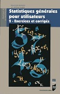

Books
Here are books that I wrote with different co-authors.
For more details, click on the image of the books or see below.
 |
 |
 |
 |  |
 |
 |
| 2018 | 2nd éd : 2017 1re éd : 2011 |
2nd éd : 2016 1re éd : 2009 |
2nd éd : 2013 1re éd : 2005 |
2013 | 3e éd : 2012 2e éd : 2010 1re éd : 2008 |
2012 |
Books in English
| F. Husson, S. Lê & J. Pagès (2017) Exploratory Multivariate Analysis by Example Using R. 2nd edition. Chapman & Hall/CRC Computer Science & Data Analysis. Commander. Données |
| Cornillon, P-A., Guyader, A., Husson, F., Jégou, N., Josse, J., Kloareg, M., Matzner-Lober, E. & Rouvière, L. |
Books in French
|
F. Husson, et al. |
|
F. Husson, S. Lê & J. Pagès |
Husson F. et Pagès J. | |
| P-A. Cornillon, A. Guyader, F. Husson, N. Jégou, J. Josse, M. Kloareg, E. Matzner-Lober, L. Rouvière. |
Books in Spanish
| F. Husson, S. Lê & J. Pagès |